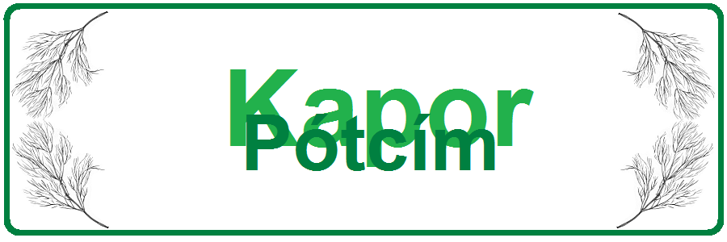
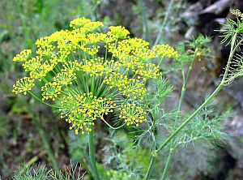

Története | Gyógyhatás | Vásárlási tanács | Felhasználás | Recept.
Az uborkafűnek is nevezett egynyári, illatos fűszernövényünk az ernyősvirágzatúak családjának tagja. Ismertebb rokonai a petrezselyem, a sárgarépa és a köménymag.

A kapor Spanyolország és Portugália partjaitól a Földközi-tenger vidékén át egészen Dél-Oroszországig őshonos, és vadon jelenleg is megterem. Egy svájci, tóparti település régészeti feltárása során bizonyítást nyert, hogy termesztése az újkőkorban kezdődött, de ókori egyiptomi írások is említik, valamint kedvelt volt a görögök és a rómaiak körében is. Utóbbiaknál egyrészt a tehetősség jelképe volt, másrészt mint egészséges fűszernövényt is nagyra tartották. Hippokratész a fehérborban megfőzött, mézzel édesített kapormag-készítményt szájöblögetésre javasolta, harci sebesülésekre, a sebek begyógyítására pedig pirított kapormag-töretet alkalmaztak.
A középkorban a kaprot bájitalok készítéséhez, gonosz varázslatok kivédése ellen használták, az 1570-es években azonban már mint közönséges kerti fűszernövényt említik a leírások. Napjainkban a kapor elsősorban Észak-Afrika, Oroszország és Skandinávia konyhájában kap fontos szerepet.
A kapor legismertebb tulajdonsága nyugtató hatása. Illóolaja ellazítja az izmokat, különösen az emésztőrendszer izmait. Évszázadok óta használják gyomorrontás, puffadás, bélgörcsök, hányinger kezelésére, kisgyermekek hascsikarásának enyhítésére. Csökkenti a gyomor és a belek puffadását, de serkenti a tejelválasztást is.
Az ásványi anyagok közül igen sokat tartalmaz vasból, mangánból és kalciumból. Enyhíti a csontritkulás és reumatikus ízületi gyulladás tüneteit. Három evőkanálnyi kapormag több kalciumot tartalmaz, mint egy jó pohár tej, vitaminjai közül pedig a C-vitamin a legfontosabb.
Említésre méltó még élelmi rosttartalma, amellyel hozzájárul az emésztőrendszer kielégítő működéséhez. A kapor illóolajai megállítják a káros baktériumok termelődését – antibakteriális hatása megközelíti a fokhagymáét. Antioxidáns vegyületei (monoterpének és flavonoidok) semlegesítik a szervezetbe jutott szabadgyököket és más, rákkeltő hatású anyagokat. A gazdag összetétel ellenére a kapor alacsony kalóriatartalmú étrend-termék. 100 g termék 40 kcal-t tartalmaz. A kapor tápértéke:
| víz | 85,5 g |
| szénhidrátok | 6,3 g |
| hamu | 2,3 g |
| fehérjék | 2,5 g |
| diétás rost | 2,8 g |
| zsír | 0,5 g |
A friss kapor íze és illóolajtartalma mindenképpen felülmúlja a szárítottét; ezért ha lehet, frisset válasszunk. Mivel szedés után igen hamar fonnyadásnak indul, a csak kissé fonnyadtat bátran megvásárolhatjuk. A sárgásra fakult, laposra aszalódott kapor viszont már régi szedésű; keressünk inkább szárítottat helyette.
A friss kaprot mindig tegyük be a hűtőszekrénybe. Lazán tekerjük nedvesített konyharuhába, vagy állítsuk vízbe.
A vajat olvasszuk fel. Tegyük bele a kaprot, és sűrű kevergetéssel pároljuk kettő percig. Adjuk hozzá az alaplevet és forraljuk fel. Közben a tejfölből, mézből és a lisztből készítsünk habarást, amivel behabarjuk a levest. Langyosan és melegen egyaránt tálalhatjuk.